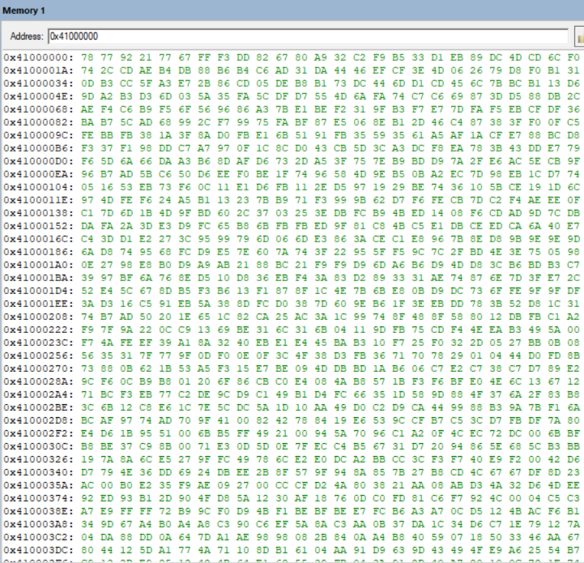

Keil MDK 환경에서 32비트 RGBA 이미지를 어셈블리 레벨에서 직접 처리해야 하는 과제였습니다.
고수준 언어의 도움 없이 레지스터 단위로 픽셀을 다뤄야 했습니다.
Subproject#2인 색 반전(negative) 연산을 맡아서, R/G/B 채널 값을 각각 255에서 빼는 어셈블리 함수를 직접 짰습니다.
32비트 RGBA 픽셀을 순회하며 R, G, B 각 채널을 255에서 빼는 색 반전 연산을 ARM 어셈블리로 구현
원본의 순차 접근 방식과, 채널별로 독립적으로 후처리하는 메모리 리로케이션(Planner) 방식을 비교해 구조를 설계
Keil MDK에서 메모리 맵을 직접 분석
개발 중에 링커 진입점이 중복 충돌하는 L6235E 에러가 났습니다.
assem.s 파일 안에서 ENTRY와 EXPORT를 재정의해서 진입점을 다시 잡는 방식으로 해결했습니다.
Subproject#2 구현을 완료했고, 메모리 리로케이션 분석 결과를 보고서로 정리했습니다.